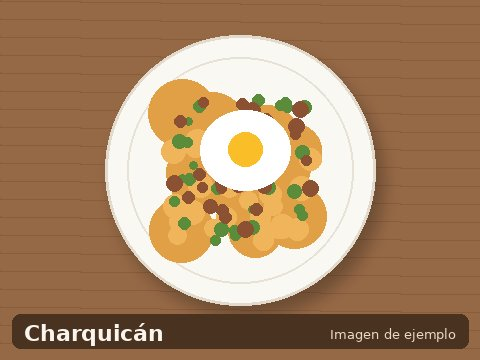

Charquicán
- 4 porciones
- 45 minutos
- Dificultad: fácil

El charquicán es uno de los platos más representativos de la cocina chilena. Reconfortante, nutritivo y fácil de preparar, es ideal para los días fríos. Su nombre viene del charqui, la carne seca que se usaba antiguamente, aunque hoy casi siempre se prepara con carne molida.
Ingredientes (4 porciones)
- 500 g de carne molida o charqui
- 4 papas medianas
- 2 zanahorias
- 1 taza de porotos verdes
- 1 taza de zapallo
- 1 cebolla
- 2 dientes de ajo
- Sal, pimienta, comino y orégano al gusto
Preparación
- Cocer las papas, zanahorias y zapallo cortados en cubos.
- En una sartén, sofreír la cebolla y el ajo picados.
- Agregar la carne y cocinar hasta que esté dorada.
- Añadir las verduras cocidas y mezclar bien.
- Machucar levemente las papas para darle consistencia.
- Sazonar con sal, pimienta, comino y orégano.
- Servir caliente. Se puede acompañar con un huevo frito.